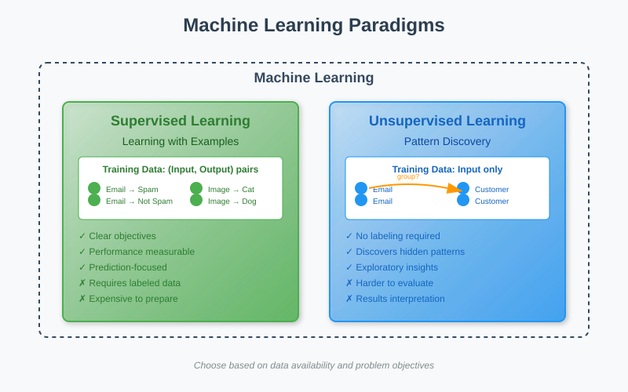
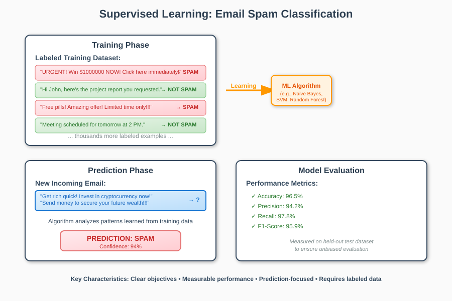
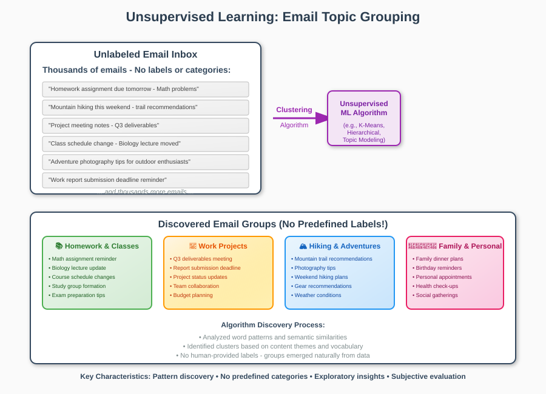
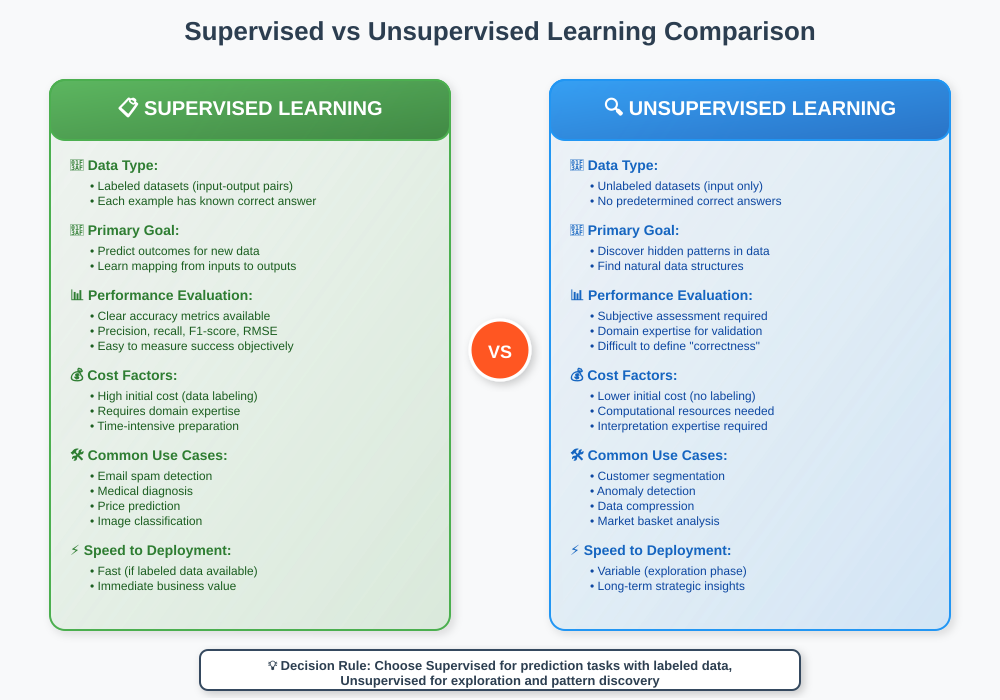
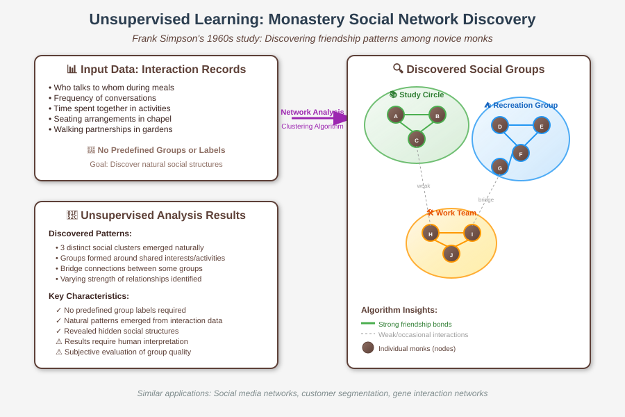

Supervised and Unsupervised Learning: A Comprehensive Guide
📋 Quick Navigation
- 🎯 Overview
- 📚 Supervised Learning
- 🔍 Unsupervised Learning
- ⚖️ Key Differences
- 🧩 Problem Classification Examples
- 💡 Practical Applications
- 🚧 Challenges and Considerations
- 📊 Comparison Summary
- 🔗 References & Further Reading
🎯 Overview
Machine learning can be broadly categorized into two fundamental paradigms: supervised learning and unsupervised learning. Understanding the distinction between these approaches is crucial for selecting the appropriate methodology for any given data science problem.

The primary distinction lies in the availability of labeled training data:
- Supervised Learning: Uses labeled datasets where the correct answers are known
- Unsupervised Learning: Works with unlabeled data to discover hidden patterns
📚 Supervised Learning
Definition
Supervised learning operates under the principle of learning from examples with known outcomes. Think of it as learning under supervision—someone is present to judge whether you're getting the right answer or not. The algorithm learns from a dataset where each data point has an associated label or target value.
Mathematical Representation
In supervised learning, we have:
Training Data: {(x₁, y₁), (x₂, y₂), ..., (xₙ, yₙ)}
Where:
- x represents input features
- y represents the target labels/outputs
- The goal is to learn a function f: X → Y
Key Characteristics
- Labeled Data: Every training example has a known correct output
- Clear Objective: Predict outcomes for new, unseen data
- Performance Evaluation: Easy to measure accuracy using validation techniques
- Goal-Oriented: Optimization towards specific prediction targets
Email Classification Example

Consider an email spam detection system:
Training Phase: - Dataset contains thousands of emails - Each email labeled as "Spam" or "Not Spam" - Algorithm learns patterns distinguishing spam from legitimate emails
Prediction Phase: - New email arrives without label - Algorithm predicts "Spam" or "Not Spam" based on learned patterns - Performance measured by accuracy of predictions
Types of Supervised Learning
- Classification: Predicting discrete categories
- Binary classification (spam/not spam)
-
Multi-class classification (sentiment: positive/negative/neutral)
-
Regression: Predicting continuous numerical values
- House price prediction
- Stock market forecasting
🔍 Unsupervised Learning
Definition
Unsupervised learning discovers hidden patterns in data without explicit guidance about desired outcomes. There are no labels or "correct answers"—the algorithm must find structure within the data itself.
Mathematical Representation
In unsupervised learning, we have:
Training Data: {x₁, x₂, x₃, ..., xₙ}
Where:
- Only input features x are available
- No target labels y exist
- Goal is to discover hidden structure in the data
Key Characteristics
- Unlabeled Data: No predetermined correct outputs
- Pattern Discovery: Identifies hidden structures and relationships
- Exploratory Nature: Often used for data exploration and understanding
- Evaluation Challenges: Difficult to measure "correctness" objectively
Email Grouping Example

Consider organizing thousands of emails by topic:
Scenario: - Email inbox with thousands of messages - No predefined categories or labels - Goal: Group similar emails together
Process: - Algorithm analyzes email content patterns - Discovers natural groupings based on similarity - Results in clusters like: - Homework & Classes - Hiking & Adventures - Work Projects - Family Communications
Types of Unsupervised Learning
- Clustering: Grouping similar data points
- K-means clustering
-
Hierarchical clustering
-
Association Rule Learning: Finding relationships between variables
- Market basket analysis
-
Recommendation systems
-
Dimensionality Reduction: Simplifying data while preserving information
- Principal Component Analysis (PCA)
- t-SNE visualization
⚖️ Key Differences

| Aspect | Supervised Learning | Unsupervised Learning |
|---|---|---|
| Data Type | Labeled (input-output pairs) | Unlabeled (input only) |
| Goal | Predict outcomes for new data | Discover hidden patterns |
| Evaluation | Clear accuracy metrics | Subjective assessment |
| Human Involvement | High (labeling required) | Low (no labels needed) |
| Cost | Expensive (labeling effort) | Less expensive |
| Use Cases | Prediction, Classification | Exploration, Segmentation |
Real-World Analogies
Supervised Learning: Like learning with flashcards where you see the question and answer, then test yourself on new questions.
Unsupervised Learning: Like organizing a messy closet—you look for natural ways to group similar items without predetermined categories.
🧩 Problem Classification Examples
Let's analyze real-world scenarios to determine whether they require supervised or unsupervised approaches:
Problem 1: Air Pollution Prediction ✅ Supervised
Scenario: Predict air pollution concentration at new locations based on weather conditions, time, and date.
Analysis: - Input Features: Location, weather conditions, time, date - Target Variable: Air pollution concentration (numerical value) - Approach: Regression problem with clear input-output relationships
Problem 2: Monastery Social Groups 🔍 Unsupervised
Scenario: Discover friendship patterns among novice monks based on recorded interactions.
Analysis: - Input Data: Interaction records between monks - No Labels: No predefined group classifications - Goal: Uncover natural social structures - Approach: Clustering/network analysis

Problem 3: NASA Rocket Simulation ✅ Supervised
Scenario: Predict simulated lift for rocket boosters based on specifications.
Analysis: - Input Features: Rocket booster specifications - Target Variable: Simulated lift values - Approach: Regression to reduce expensive simulation time
Problem 4: Video Compression 🔍 Unsupervised
Scenario: Compress bird nest monitoring videos by grouping similar pixels.
Analysis: - Input Data: Pixel information (color, temporal data) - No Explicit Labels: No predetermined compression categories - Goal: Find natural pixel groupings for efficient compression - Approach: Clustering similar pixels
💡 Practical Applications
Supervised Learning Applications
- Healthcare
- Medical diagnosis based on symptoms and test results
-
Drug discovery and efficacy prediction
-
Finance
- Credit scoring and loan approval
-
Fraud detection in transactions
-
Technology
- Image recognition and computer vision
- Natural language processing and sentiment analysis
Unsupervised Learning Applications
- Marketing
- Customer segmentation for targeted campaigns
-
Market basket analysis for product recommendations
-
Social Media
- Content recommendation algorithms
-
Trending topic detection
-
Scientific Research
- Gene sequence analysis
- Astronomical pattern discovery
🚧 Challenges and Considerations
Supervised Learning Challenges
- Data Labeling Costs
- Expensive and time-consuming to create labeled datasets
-
Requires domain expertise for accurate labeling
-
Overfitting Risk
- Models may memorize training data instead of learning patterns
-
Requires careful validation and regularization
-
Label Quality
- Inconsistent or incorrect labels can mislead the algorithm
- Human bias can be encoded in the labels
Unsupervised Learning Challenges
- Evaluation Difficulty
- No clear "ground truth" to measure performance against
-
Results often require human interpretation
-
Parameter Sensitivity
- Many algorithms require careful tuning of hyperparameters
-
Different parameter settings can yield vastly different results
-
Interpretation Complexity
- Discovered patterns may not always be meaningful or actionable
- Requires domain expertise to validate findings
Cost-Benefit Analysis
Supervised Learning: - High upfront cost (labeling) - Clear performance metrics - Immediate practical applications
Unsupervised Learning: - Lower initial cost - Exploratory insights - Foundation for further analysis
📊 Comparison Summary
| Factor | Supervised | Unsupervised | Winner |
|---|---|---|---|
| Data Requirements | High (needs labels) | Low (raw data only) | 🔍 Unsupervised |
| Accuracy Measurement | Straightforward | Challenging | ✅ Supervised |
| Business Value | Immediate predictions | Long-term insights | Depends on use case |
| Implementation Speed | Fast (if data ready) | Variable | ✅ Supervised |
| Discovery Potential | Limited to known outcomes | High for new patterns | 🔍 Unsupervised |
Decision Framework
Choose Supervised Learning when: - You have labeled training data - The goal is to make predictions - Performance can be clearly measured - Immediate business value is needed
Choose Unsupervised Learning when: - You want to explore data without preconceptions - Labeling is expensive or impossible - The goal is to understand data structure - You're looking for hidden insights
🔗 References & Further Reading
Academic Papers
- "Pattern Recognition and Machine Learning" - Christopher Bishop
- "The Elements of Statistical Learning" - Hastie, Tibshirani, and Friedman
- "Unsupervised Learning: Foundations of Neural Computation" - Hinton & Sejnowski
Online Resources
- Coursera Machine Learning Course - Andrew Ng
- Comprehensive introduction to both supervised and unsupervised learning
- Scikit-learn Documentation
- Practical implementation guides and examples
- Towards Data Science - Medium Publication
- Regular articles on real-world applications and case studies
Practical Tools
- Google Colab Notebooks

- Hugging Face Transformers
- State-of-the-art supervised learning models for NLP
Research Communities
- ArXiv Machine Learning - Latest research papers
- Kaggle Learn - Free micro-courses with hands-on practice
This documentation provides a comprehensive foundation for understanding supervised and unsupervised learning paradigms. For hands-on practice, consider exploring the linked resources and implementing the discussed examples in your preferred programming environment.